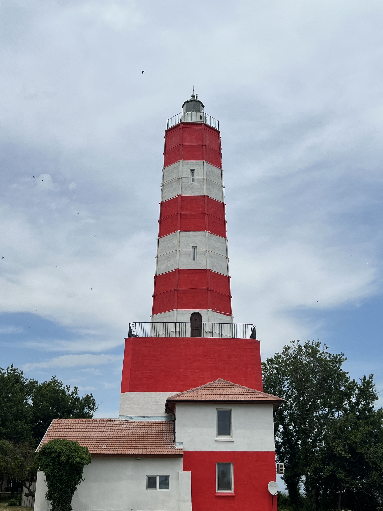
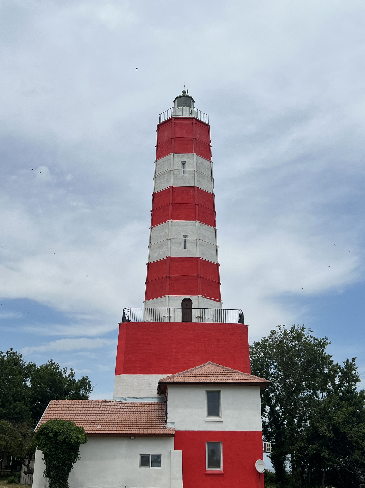

My alarm rang at 6 - we were on the road at 7 with almost 300 miles ahead of us and a tennis match to catch. Our destination was a campground slightly north of Durankulak, a village near the Black Sea just shy of 4 miles from the Romanian border. Once the car was packed, music was blasting, and windows were down, driving there took us about 6 hours in total. After pitching our tent and unloading a few things from the car we immediately hit the beach. The water was a beautiful aqua color near the shallow part of the shore, and small waves gently lapped the sand. My uncle jumped in first and started swimming out into the water while I dipped my toes in. I knew the temperature would be warmer than the water on the Oregon coast, but I was shocked at just how warm it was. As I jumped in, the water that greeted me was about as warm as a cold swimming pool, about 70F or 21C. The sea was calm, and the lack of waves surprised me. Once again, the only large body of water I've ever been around has been the Pacific Ocean where the coastline always has large waves and it rarely gets above 57F or 14C in the summertime. After swimming for a while, we dried off in the sun and headed for the pub that was on the campsite to catch the semi-final of Roland Garros, a tennis tournament hosted in Paris each year. As someone who loves seafood with a long game to watch, I was in heaven here. After ordering mussels, french fries, fish soup, catfish, cафриди (safridi - small fish that are fried whole - or in english, horse mackerel), and plenty of beer, we watched the semi-final until the end and made our way back into the tent (our guy Djokovich won).


Half an hour south from the campsite the coastline turned into jagged cliffs, a popular spot for fisherman and rock climbers. Climbers can only come during certain seasons however as the activity disturbs the birds that nest there. After wandering the coastline for a while we continued south, passing through several towns until we reached a natural bridge over the ocean formed from the cliffs. We saw a lot of different types of birds peeking out from the unique landscape, and the towns we passed through had a cozy feel to them. We visited the oldest lighthouse in Bulgaria here, in the town of Shabla. An old fisherman lives here with a tiny restaurant that he operates out of his home offering (from what I've heard) delicious seafood, however we didn't get to try it (defintely next time).

 



For dinner we travelled north, passing the campsite and through the border into Romania where my Uncle knew a spot for wood fired fish. At the border we converted some currency (Leva -> Lei) which took some getting used to using. (A dollar is 1.8 lev, which is 4.5 lei) I still never got used to the fact that icecream for two people is 38 bucks in any currancy. The spot was located in the first town after the border, in Vama Veche, Romania's most southern coastal town. Even for the beggining of the season it was lively here, with lots of restaurants and shops buzzing with people. After finding a parking spot we followed the beach until we reached the restaurant. My uncle had travelled into Romania before, but communicating for him was always a game of charades - so we figured I could speak English with them and everything would be smooth! This was not the case. With a mixture of broken English and menu pointing we ordered some fish and drinks which were fantastic with a sea view.


The next day we went back south to the coastal cliffs, this time to see the Kaliakra, the ruins of an ancient fortress built in the fourth century. Located on a high peninsula behind three walls, with steep cliffs over 200 feet (70 meters) down to the sea, it was easy to imagine how the fortress had lasted for such a long time. The walls were built inland, with the first wall starting closest to the tip of the peninsula, taking several hundred years to build all three as the civilization expanded. The biggest and most impressive is the third wall which is 33 feet or 10 meters tall and almost 10 feet or 3 meters thick. After wandering the ruins, taking in the views, and checking out the small museum there, we decided it was time for lunch.